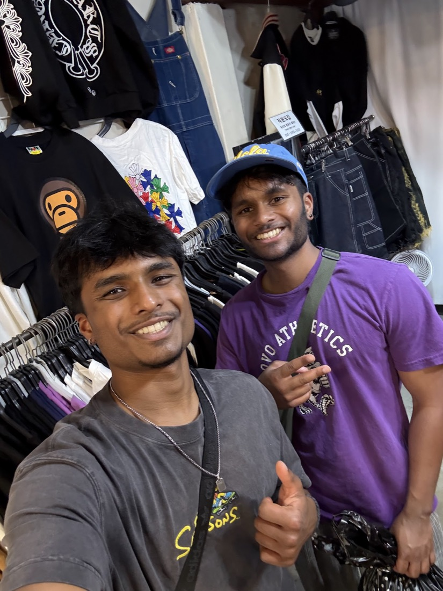
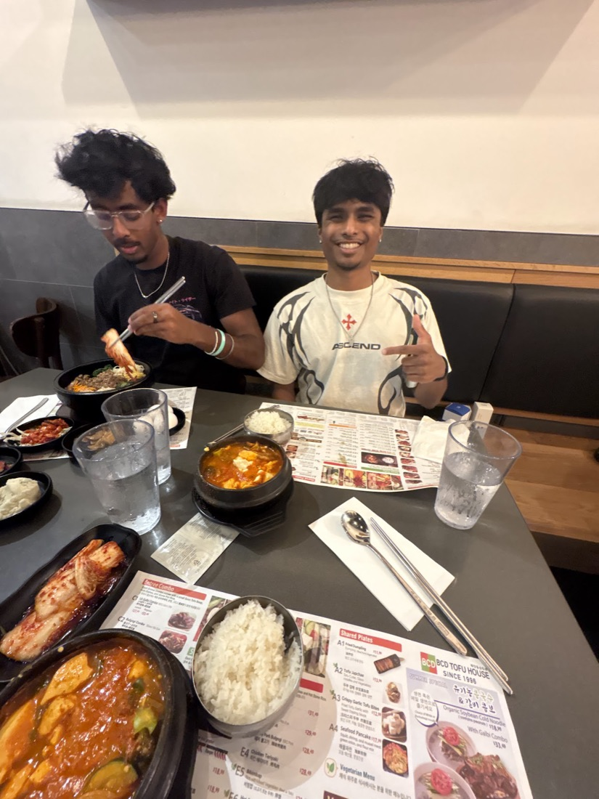

Grounding an AI journey-generation agent in what has actually worked
- I built an LLM-driven Databricks pipeline that clusters patterns across 5,000 production marketing journeys. It surfaced structural factors tied to 57.9 percentage points higher engagement and conversion, and I validated them with significance testing.
- Then I fed those patterns into Adobe's AI journey-generation agent through a confidence-gated retrieval layer, so the journeys it generates are grounded in what has actually performed well.
- I also shipped journey fragment suggestions, found with embedding similarity search and ranked by performance lift and relevance, that marketers can drop straight into the journey canvas.
Offline: mine what works
- Production journeys5,000 marketing journeys
- LLM-driven miningExtract and cluster structural patterns on Databricks
- Significance testingKeep patterns tied to performance
- Mined patterns and trendsGrounding context
Grounded generation
- Confidence-gated retrievalAdds mined patterns and trends as context
- Journey-generation agentAdobe's AI agent, now with richer context
- Grounded journeysBacked by historical performance data
Fragment suggestions
- Embedding similarity searchFind relevant journey fragments
- RankingBy performance lift and contextual relevance
- Journey canvasSuggestions marketers use directly
This is proprietary Adobe work, so there's no code or internal data here. I'm happy to walk through the design decisions in conversation.
Teaching bimanual robot arms real-world manipulation, like folding laundry
- I wrote the control software for our ALOHA bimanual arms, from low-level actuation up to running learned policies.
- I fine-tune and deploy transformer-based robot policies, including Vision-Language-Action models and imitation-learning flow matching, for manipulation tasks.
- I set up the data collection pipelines and DAgger workflows that keep improving those policies on real tasks, like folding laundry.
- Right now I'm building a shared-autonomy assistant on a Unitree Go2 quadruped. It maps rooms with lidar SLAM, follows natural-language commands through a vision-language model agent, and can be corrected with your gaze, for assistive use.
Data-to-deployment loop
- Data collectionDemonstrations on ALOHA arms
- Policy trainingFine-tune VLA and flow-matching policies
- DeploymentControl stack from actuation to policy execution
- Real-world tasksManipulation, including laundry folding
DAgger: corrections collected during deployment go back into the training data.
Leading a student team that builds and delivers software for LA nonprofits
- I lead a team of 10 developers building apps for LA nonprofits, working directly with each client on what they actually need. Nova won the UCLA Engineering Society Technical Project Award.
- We built inventory software for Mending Kids to track supplies across their international medical missions.
- We built an internal operations platform for Inner City Visions, which runs programs for at-risk youth. Source on GitHub.
- I also handle funding: grants, sponsorships, and alumni and external partnerships.
More work
Wavelength
LA Hacks 2026, team of four
A multi-agent social app that builds taste profiles from Spotify, Steam, Letterboxd, Goodreads, and screenshots of Yelp and Beli, then negotiates group plans. User agents advocate for each person's preferences, and a mediator agent negotiates the plan (Fetch.ai uAgents, Gemma, Gemini, FastAPI, MongoDB, React Native). Code, Devpost.
BruinBear quadruped robot
UCLA ASME X1 Robotics, Software and Controls Lead, 2024 to 2025
I led software and controls for a quadruped bear robot: limb inverse kinematics, motor PID and feedforward control, and closed-loop gait trajectories in ROS and MuJoCo. Added face and hand-gesture recognition, RealSense depth for obstacle avoidance and path following, and an IMU for closed-loop kinematics. Code.
BruinLife Photo Studio
UCLA Student Media, DevOps Project Manager, 2024 to 2026
I led development of a platform for appointment booking, photo transactions, and photographer scheduling serving 1,000+ customers a year (Flask, React, SQL, AWS S3). I also kept the DigitalOcean servers running behind Bruinwalk, BruinLife, and other publications for a 2,000+ member organization.
Distributed training and cloud bursting
Spillbox, Software Engineer Intern, Summer 2025
I built distributed training pipelines with PyTorch DDP and automated Kubernetes deployment across AWS and Lambda Cloud, with real-time syncing of data and models between on-prem and cloud. For the demo, I trained a 1.5 GB sentiment classifier in 7 minutes on a 2-GPU cluster.
FTC Robotics
Roboavatars, Team Lead and Software and Design Specialist, 2019 to 2024
I spent five years building competition robots in Java and CAD, with computer vision, pathing, and localization. We won the Control Award and Finalist Alliance at the NorCal Championships (200+ teams) and reached Semifinalist Alliance (top 12) at the Maryland Tech Invitational, which invites the top 50 teams in the world. I also taught a free 20-hour programming course to 75+ elementary students, and built PowerPlayScorer, a Flutter scoring app on the web and Google Play. Code.
Education and skills
UCLA, B.S. Computer Science, 2028
4.0 GPA. Deep Learning, Robotics, Machine Learning, Computer Architecture, Programming Languages, Software Construction, Data Structures, Algorithms. UCLA Engineering Scholarship (2025), National Merit Scholarship (2024), Presidential Scholars Candidate (2024). AP Computer Science A perfect score, one of 91 worldwide (2023). USACO Silver (2023).
Tools
Python, C++, Java, JavaScript, Bash. PyTorch, TensorFlow, RAG and LLM pipelines, embeddings and vector search, OpenCV, ROS 2, MuJoCo. React, Node.js, Flask, Firebase, MongoDB, SQLite, AWS S3 and EC2, DigitalOcean, Databricks.
Outside of it all
Thrifting in Seoul, palace hopping, and eating my way through Korea.



